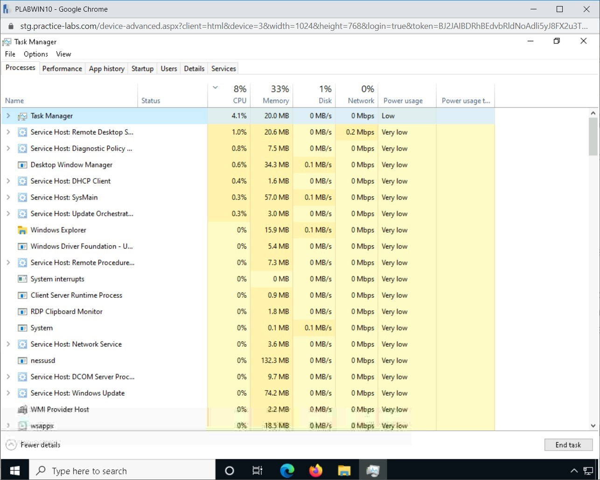
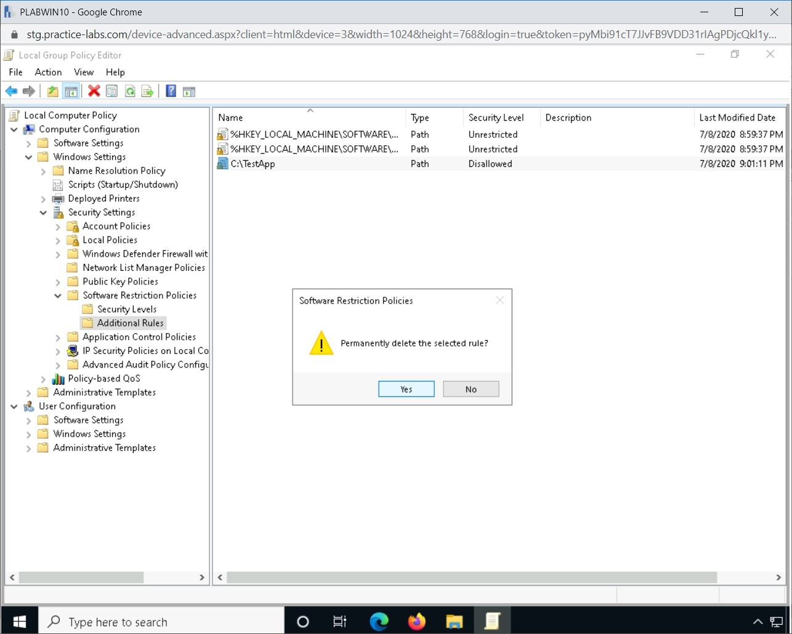

Introduction
9beca326-b493-4b0e-b3dc-d7dfb77df3c9
Welcome to the Host Related Incident Compromise Indicators Practice Lab. In this module, you will be provided with the instructions and devices needed to develop your hands-on skills.
dc640c20-9434-45ea-b7c2-6d4d6a196bfc
Learning Outcomes
In this module, you will complete the following exercises:
- Exercise 1 - Host-related Incident Compromise Indicators
- Exercise 2 - Prevent Unauthorized Software from Running
After completing this lab, you will be able to:
- Create a Sample Batch File
- Create a Local Software Restriction Policy
After completing this module, you will have further knowledge of:
- Processor Consumption
- Memory Consumption
- Drive Capacity Consumption
- Malicious Process
- Unauthorized Change
- Unauthorized Privileges
- Data Exfiltration
- Abnormal OS Process Behavior
- File System Changes or Anomalies
- Registry Changes or Anomalies
- Unauthorized Scheduled Tasks
Exam Objectives
The following exam objectives are covered in this lab:
- 4.3 Given an incident, analyze potential indicators of compromise
Note: Our main
focus is to cover the practical, hands-on aspects of the exam
objectives. We recommend referring to course material or a search engine
to research theoretical topics in more detail.
Lab Duration
It will take approximately 1 hour to complete this lab.
1b317064-7b0c-48e0-845c-05a2d99e80c5
Help and Support
For more information on using Practice Labs, please see our Help and Support page. You can also raise a technical support ticket from this page.
Click Next to view the Lab topology used in this module.
d2c53300-f951-45a9-9aa4-3d4ecae69e11
Lab Topology
During your session, you will have access to the following lab configuration.

Depending on the exercises, you may or may not use all
of the devices, but they are shown here in the layout to get an overall
understanding of the topology of the lab.
- PLABDC01 - (Windows Server 2019 - Domain Server)
- PLABDM01 - (Windows Server 2019 - Domain Member)
- PLABKALI01 - (Kali Linux 2019 - Linux Kali)
- PLABWIN10 - (Windows 10 - Domain Member Workstation)
- PLABCENTOS - (Centos 8 Linux - Stand-alone Linux Server)
- PLABALIENVAULT - (Alien Vault Linux Security Management Platform)
Click Next to proceed to the first exercise.
<
Home |
README >
CompTIA Cybersecurity Analyst (CySA+) Practice Labs
Exercise 1 - Host-Related Incident Compromise Indicators
When a host is compromised, it may start showing
strange symptoms. There may be unforeseen system hang issues even though
no application is launched. There may be continuous spikes in the
memory, CPU, or network utilization. In most cases, a security
professionals do not pay attention to a non-critical system on the
network. However, if this is a critical system or server, then it is
likely to catch the attention of a security professional.
In this exercise, you will learn about some of the key symptoms of a system that has been compromised.
Learning Outcomes
After completing this exercise, you will have further knowledge of:
- Processor Consumption
- Memory Consumption
- Drive Capacity Consumption
- Malicious Process
- Unauthorized Change
- Unauthorized Privileges
- Data Exfiltration
- Abnormal OS Process Behavior
- File System Changes or Anomalies
- Registry Changes or Anomalies
- Unauthorized Scheduled Tasks
Your Devices
This exercise contains supporting materials for CySA+.

Processor Consumption
When malware runs on a system, it typically starts
consuming the processor. When your system is idle, or an application is
running, the processor should not be running at its peak. If it does,
you can assume that there is something wrong, which could be that one of
the background processes, which can be a malware, is consuming the
processor time.
One method to verify processor performance is by using
the Task Manager and verify processor utilization, which is available
on the Performance tab. The below exhibit displays normal
processor utilization as it is fluctuating between 30-40 percent, which
is quite normal. Also, note that there are about 142 processes running.
The number of processes depends on the number of applications and
services running.
Figure 1.1 Screenshot of PLABWIN10: Showing the Performance tab with CPU performance in Task Manager.
However, if the system is already in hang state or
busy, then the Task Manager takes time to open. When processor
utilization is high, you can assume something in the background is
consuming it even though you are not running any applications. Notice
that in the same Windows system, the number of processes changes. The
utilization spikes up above 90 percent. This could indicate that some
unknown processes are consuming the processing time. It may not be true
in all cases, but it would be worth checking out.
Figure 1.2 Screenshot of PLABWIN10: Showing the Performance tab with CPU performance in Task Manager.
Memory Consumption
High memory consumption can be another indicator of a
compromised host. Some malware simply loads themselves into memory and
then uses it to execute tasks. Each service and application that you run
consumes memory from the Windows system. However, if there are unusual
spikes in memory consumption, you should investigate it further. The
given exhibit displays the normal consumption of memory.
 Figure 1.3 Screenshot of PLABWIN10: Showing the Performance tab with memory performance in Task Manager.
Figure 1.3 Screenshot of PLABWIN10: Showing the Performance tab with memory performance in Task Manager.
Drive Capacity Consumption
A compromised system may have a lot of free space
available, which can be used by the attacker. In some cases, an attacker
will use the space to dump files, which are hidden. If you find that
the free space on your system is disappearing without you adding extra
files, you should suspect that the system has been compromised.
In such a scenario, you should scan the system with an
antivirus or antimalware program. It is also good to unhide hidden
files and folders. You may discover that certain folders contain
hundreds of Gigabytes of files.
Malicious Process
Any process in Windows is designed to access the CPU.
When you start an application, a process starts in the background and
runs with certain system resources. When you open Task Manager in
Windows, the Processes tab contains the list of running processes.
Figure 1.4 Screenshot of PLABWIN10: Showing the Process tab with several processes running in Task Manager.
In many cases, the process related to the running
malware will show up in Task Manager. You can terminate the process
related to malware. However, it is important to note that even though
the process has been terminated, malware is still present in the system.
The malware process can also be designed to start with the system
startup. Therefore, when you start the system, the process is going to
start once again. Therefore, you should also check the Startup tab in
Task Manager and locate if any unknown program is running. If it is
running, then you should simply remove the program from the Startup tab.
You should also delete its program directory and the related registry
keys.
Figure 1.5 Screenshot of PLABWIN10: Showing the Startup tab in Task Manager.
Unauthorized Change
A change in a system can be anything that is
intentionally done either by the user or the administrator. However,
there may be instances in which malware makes unauthorized changes. For
example, you may find certain programs have stopped working due to
missing files. Another instance can be related to unwanted changes made
to files.
An attacker may also try to manipulate your antivirus
or antimalware application on the system. If you find that the
antimalware is no longer working on your system or has missing files,
you should suspect that the cause is due to malware. You should attempt
to scan your system with a live CD-based antimalware.
Unauthorized Privilege
Once a system is compromised using a user account,
the attacker is likely to escalate privileges to gain administrative
control. If a system has been compromised, you should check for any new
accounts that have been created, specifically ones that you are unaware
of. Such an account on a compromised system is likely to have
administrative privileges.
As a usual security practice, you should be scanning
systems and servers for existing and new accounts and verifying their
permissions. Also, it is always recommended to implement the principle
of least privileges. User accounts should never be assigned more
privileges than they need to perform their job function.
Data Exfiltration
On a compromised system, data exfiltration is a
common threat. The attacker, after gaining control of the system, is
likely to scan through and either move data to his or her system or copy
it. In either of these cases, data privacy and integrity is at risk.
To prevent such a threat, you can use Data Loss
Prevention (DLP), which helps you prevent data leakage. For example, you
can prevent copying and printing of documents that you send through
Email. The recipient can also be prevented from forwarding the Email
with the document to a third person.
Abnormal OS Process Behavior
Malware can continue to run in the background. Most
malware is designed to drop a backdoor into the system that will
continue to be active even if it is removed from the system. Malware may
also be running a process within the system that the antivirus or
antimalware can detect. In a scenario, if malware is removed from the
system, the process may continue to run and cause damage to other
systems. In such a scenario, some common issues such as system slow down
appears.
To be able to prevent an unusual process from
running, you should harden the systems and monitor them continuously to
see if there are any unauthorized changes or unauthorized processes that
are running. If you detect a deviation, then you know there is a
possibility of malware. You can then scan the system and remove the
malware. However, removing a backdoor can be a little tricky. The
recommendation is to restore the system from a hardened image
completely.
File System Change or Anomaly
Each operating system runs with a specific file system. Windows can run with different types of file systems, such as FAT32, NTFS, and exFAT.
When you install an operating system, the file system is designed to
work in a certain manner. However, there can be anomalies that may be
introduced by malware or an attacker. Some of the key anomalies in a
file system can be:
- Unknown files
- Altered files
- Altered file attributes
- Presence of unknown file types
You can control this to some extent by baselining the
operating system. If there is any change in the behavior of the file
system, it can further be detected. You should also check the system
logs continuously to understand the modifications that are being made to
the file system.
Registry Change or Anomalies
A registry change can occur due to various reasons,
such as installation or uninstallation of an application. It can also
occur due to improper shut down of a system. Registry changes are quite
common. However, anomalies or unauthorized changes can occur due to a
malware attack on the system.
If you have a system that is part of a domain, it is
easy to block the changes to the registry by implementing Group Policy.
This can also be done on a standalone system by editing the registry
itself. You can edit the following key:
HKEY_CURRENT_USER\SOFTWARE\Microsoft\Windows\CurrentVersion\Policies\System
Within the System key, you need to add a new value named DisableRegistryTools and set its value to 1.
After you make these changes, other than the administrator, no user
account should be able to make changes to the registry. You should also
disable the Remote Registry service within the Windows system.
Unauthorized Scheduled Tasks
When investigating logs on a compromised system, you
may notice that certain events have taken place at an odd time. For
example, certain events were generated at 2 AM, and their occurrence is
at 2 AM over multiple nights. This should give you a reason that someone
is running an unauthorized scheduled task. You should check the Task
Scheduler and see if there are unknown scheduled tasks that are
generating the event. If there are, then you should delete them. You
should also scan the system with the updated antivirus or antimalware.
dc2a295a-ab17-4b52-8e1c-80389d10a470
<
Home |
README >
CompTIA Cybersecurity Analyst (CySA+) Practice Labs
Exercise 2 - Prevent Unauthorized Software from Running
In several cases, malware disguises itself in the
form of legitimate software and stays on the system. The user does not
realize that it is malware. Antivirus or antimalware applications fail
to catch such malware. To prevent the presence of such applications on
your system, you can allow or block applications that can run. For
example, you can prevent any kind of batch files from running on your
system.
Windows provides two different methods. The first
method is the Software Restriction Policies, which was designed for
older Windows systems, but is still available in Windows 10. The second
one is Windows AppLocker. You can create a whitelist of the applications
that can run on your system. Similarly, you can also create a blacklist
of applications that cannot run. Depending on whether you implement it
on a single system or all domain system, you can utilize the Local
Security Policy or Group Policy.
In this exercise, you will learn how to create a
software restriction policy on a local computer-based on the file path
and hash rules.
Learning Outcomes
After completing this exercise, you will be able to:
- Create a Sample Batch File
- Create a Local Software Restriction Policy
Your Devices
You will be using the following devices in this lab. Please power these on now.

- PLABDC01 - (Windows Server 2019 - Domain Server)
- PLABWIN10 - (Windows 10 - Domain Member Workstation)
Task 1 - Create a Sample Batch File
Software restriction policies are a policy-driven
mechanism that provides administrators the ability to identify and
control applications that can run on a Windows computer. These policies
protect Windows clients starting from Windows XP and later versions
from security threats such as viruses and Trojan host programs.
In this task, you will create a sample batch file that will later be used to create rules in software restriction policy.
Step 1
Ensure you have powered on the required devices defined in the introduction and connect to PLABWIN10.
Click File Explorer on the taskbar.
Figure 2.1 Screenshot of PLABWIN10: Clicking the File Explorer icon in the taskbar.
Step 2
On the File Explorer window, click the View tab.
Figure 2.2 Screenshot of PLABWIN10: Clicking the View tab on the File Explorer window.
Step 3
At the far right of the toolbar, click Options and select Change folder and search options.
Figure
2.3 Screenshot of PLABWIN10: Clicking the Options > Change folder
and search options on the View tab of the File Explorer window.
Step 4
On the Folder Options dialog box, click the View tab.
Figure 2.4 Screenshot of PLABWIN10: Clicking the View tab on the Folder Options dialog box.
Step 5
From the View tab, under the Advanced settings section, deselect the Hide extensions for known file types option.
Click OK.
Figure 2.5 Screenshot of PLABWIN10: Deselecting the Hide extensions for known file types option and clicking OK on the View tab.
Step 6
Under This PC node, expand the Local Disk (C:) drive.
Right-click Local Disk C, select New and then select Folder.
Figure 2.6 Screenshot of PLABWIN10: Right-clicking Local Disk C drive to select New and then select Folder.
Step 7
Rename the folder as TestApp.
Figure 2.7 Screenshot of PLABWIN10: Renaming the newly created folder as TestApp.
Step 8
The TestApp folder is selected now.
In the right pane, right-click on the details pane, select New and select Text Document.
Figure 2.8 Screenshot of PLABWIN10: Right-clicking on the details pane, selecting New, and selecting Text document.
Step 9
Rename the new Text Document.txt as:
app1.bat
Note that you need to change the extension name of the file as well.
Figure 2.9 Screenshot of PLABWIN10: Renaming the new file as app.bat.
Step 10
On the Rename message box, click Yes.
Figure 2.10 Screenshot of PLABWIN10: Clicking Yes on the Rename message box.
Step 11
Select and right-click app1.bat and select Edit.
Figure 2.11 Screenshot of PLABWIN10: Selecting and right-clicking on app1.bat and selecting Edit.
Step 12
On the app1.bat window, type the following text:
echo This is a test batch file…
pause
Figure 2.12 Screenshot of PLABWIN10: Entering the contents in the app1.bat file.
Step 13
Click File and Save.
Figure 2.13 Screenshot of PLABWIN10: Clicking File and selecting Save.
Step 14
Close the app1.bat window.
Figure 2.14 Screenshot of PLABWIN10: Closing the app1.bat file.
Similarly, close the File Explorer window.
Task 2 - Create a Local Software Restriction Policy
You have created a batch file that you are going to
block from running on your Windows 10 system. For this task, a local
software restriction policy will be created using file path and hash
rules.
To do this, perform the following steps:
Step 1
Connect to PLABWIN10. Right-click Start and select Run.
 Figure 2.15 Screenshot of PLABWIN10: Right-clicking Start and selecting Run.
Figure 2.15 Screenshot of PLABWIN10: Right-clicking Start and selecting Run.
Step 2
In the Run dialog box, type the following text in the Open text box:
gpedit.msc
Click OK.
Figure 2.16 Screenshot of PLABWIN10: Entering the gpedit.msc command and clicking OK on the Run dialog box.
Step 3
On the Local Computer Policy window, expand Computer Configuration > Windows Settings > Security Settings and then select Software Restriction Policies.
Right-click Software Restriction Policies and select New Software Restriction Policies.
Figure
2.17 Screenshot of PLABWIN10: Right-clicking the Software Restriction
Policies and selecting New Software Restriction Policies on the Local
Group Policy Editor window.
Step 4
Two subfolders are added: Security Levels and Additional Rules.
Click the Security Levels folder.
The default setting is Unrestricted, which means that all applications on the computer can be launched.
Figure 2.18 Screenshot of PLABWIN10: Selecting the Security Levels folder in the Local Group Policy Editor window.
Step 5
Right-click the Additional Rules folder and select New Path Rule.
Figure 2.19 Screenshot of PLABWIN10: Right-clicking the Additional Rules folder and select New Path Rule.
Step 6
On the New Path Rule, type the following:
C:\TestApp
Ensure that the Security level is set to Disallowed.
Click OK.
Figure 2.20 Screenshot of PLABWIN10: Entering the path in the New Path Rule dialog box and clicking the OK button.
Step 7
Click Additional Rules. Notice that the path rule for C:\TestApp is now created.
Minimize the Local Group Policy Editor window.
Figure
2.21 Screenshot of PLABWIN10: Clicking Additional Rules in the left
pane and showing the path rule created in the right pane.
Step 8
Click File Explorer on the taskbar.
Expand Local Disk (C:) and open the TestApp folder.
Right-click app1.bat and select Open.
Figure 2.22 Screenshot of PLABWIN10: Right-clicking the app1.bat file and selecting Open.
Step 9
A message box appears saying, “Your system administrator has blocked this program.”
Click OK.
This behavior is expected as the software restriction policy will block the batch file based on its file path.
Figure 2.23 Screenshot of PLABWIN10: Showing an error that blocks the opening of the batch file and then clicking OK.
Step 10
In this step, you will now test the software restriction policy by copying the batch file to another location.
Right-click the app1.bat file and select Copy.
Figure 2.24 Screenshot of PLABWIN10: Right-clicking the app1.bat file and selecting Copy.
Step 11
Click the Local Disk (C:) drive and paste the file on the root drive.
Note: If a dialog box displays regarding denying to copy the file to root directory, click Continue.
Figure 2.25 Screenshot of PLABWIN10: Clicking the Local Disk (C:) drive and pasting the file on the root drive.
Step 12
Right-click app1.bat and select Open.
Figure 2.26 Screenshot of PLABWIN10: Right-clicking the app1.bat file and then selecting Open.
Step 13
The batch file runs because the software restriction policy is based on the file path c:\TestApp.
Press Enter to terminate the batch file.
Figure
2.27 Screenshot of PLABWIN10: Showing the execution of the batch file
in the command prompt window and pressing Enter to terminate the batch
file.
Step 14
Minimize the File Explorer window.
Restore Local Group Policy Editor from the taskbar.
On the Local Group Policy Editor window, right-click C:\TestApp and select Delete.
Figure 2.28 Screenshot of PLABWIN10: Right-clicking C:\TestApp and selecting Delete on the Local Group Policy Editor window.
Step 15
On the Software Restriction Policies dialog box, click Yes to delete the rule.
Figure 2.29 Screenshot of PLABWIN10: Clicking Yes to delete the rule in the Software Restriction Policies dialog box.
Step 16
Right-click in the right-hand pane and then select New Hash Rule.
Figure
2.30 Screenshot of PLABWIN10: Right-clicking in the right pane and then
selecting New Hash Rule on the Local Group Policy Editor window.
Step 17
On the New Hash Rule dialog box, click Browse.
Figure 2.31 Screenshot of PLABWIN10: Clicking Browse on the New Hash Rule dialog box.
Step 18
On the Open dialog box, expand Local Disk (C:) drive then click the TestApp folder.
At the right details pane, select app1.bat.
Click Open.
Figure 2.32 Screenshot of PLABWIN10: Clicking the Open dialog box and clicking the Open button.
Step 19
On the New Hash Rule, a summary of the File information is displayed.
The Security level must be set to Disallowed.
Click OK.
Figure 2.33 Screenshot of PLABWIN10: Showing the summary in the New Hash Rule dialog box and clicking the OK button.
Step 20
The Local Group Policy Editor has the new hash rule added.
Figure 2.34 Screenshot of PLABWIN10: Showing the newly-created hash rule in the Local Group Policy Editor window.
Step 21
Close Local Group Policy Editor.
Figure 2.35 Screenshot of PLABWIN10: Closing the Local Group Policy Editor window.
Step 22
Restore File Explorer from the taskbar.
On the File Explorer window, ensure that you are in Local Disk (C:).
Right-click app1.bat and select Open.
Figure 2.36 Screenshot of PLABWIN10: Right-clicking the app1.bat file and selecting Open.
Step 23
After a change in the software restriction policy to hash rule, notice that the app1.bat is blocked regardless of its location.
Click OK and navigate to C:\TestApp and open app1.bat file. You should get the same message that the file is blocked because of a policy.
Figure 2.37 Screenshot of PLABWIN10: Clicking OK on the error message dialog box.
92fea127-9ca7-4825-8147-63c3d2f6f0d4
86b3caf2-2504-4e20-a81b-2fcb2368c8d2
Keep all devices that you have powered on in their current state and proceed to the review section.
Review
Well done, you have completed the Host Related Incident Compromise Indicators Practice Lab.
2abaca70-efa1-4fe5-94fb-ad1777bfc242
d69e86d2-de93-49d9-a2ff-809dfac2ccbb
df088198-7ca3-4d0c-8959-ea7885ae1e46
93e1d940-8a08-4942-89c4-8402ce420aa6
099ccabc-2c8a-4a28-b556-97a497802407
2b2943c7-535e-400c-95ca-4af7e997bd76
aaaaaaaa-1111-1111-1111-193f35a24fe3
Summary
You completed the following exercises:
- Exercise 1 - Host-related Incident Compromise Indicators
- Exercise 2 - Prevent Unauthorized Software from Running
You should now be able to:
- Create a Sample Batch File
- Create a Local Software Restriction Policy
You should now have further knowledge of:
- Processor Consumption
- Memory Consumption
- Drive Capacity Consumption
- Malicious Process
- Unauthorized Change
- Unauthorized Privileges
- Data Exfiltration
- Abnormal OS Process Behavior
- File System Changes or Anomalies
- Registry Changes or Anomalies
- Unauthorized Scheduled Tasks
Feedback
067744a4-4299-4662-b5be-04dbb636a007
Shutdown all virtual machines used in this lab. Alternatively, you can log out of the lab platform.